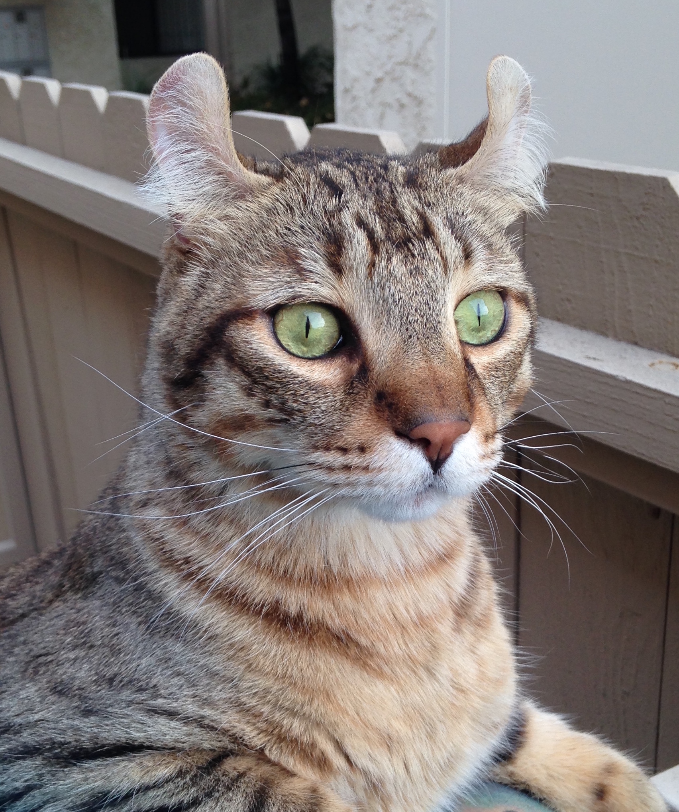

The highlander cat comes as both a shorthair and a longhair. It is a relatively new breed compared to others, but is recognized by many. These cats have a lot of energy and are very people friendly, though they aren't very vocal. These cats even wag their tails when they are happy and playing, like a dog.
